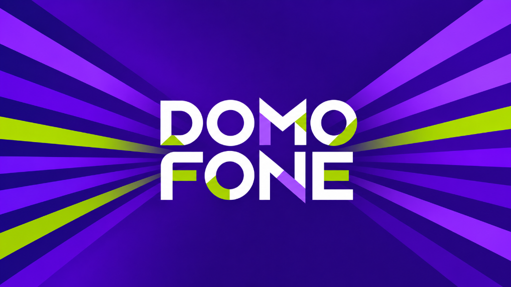
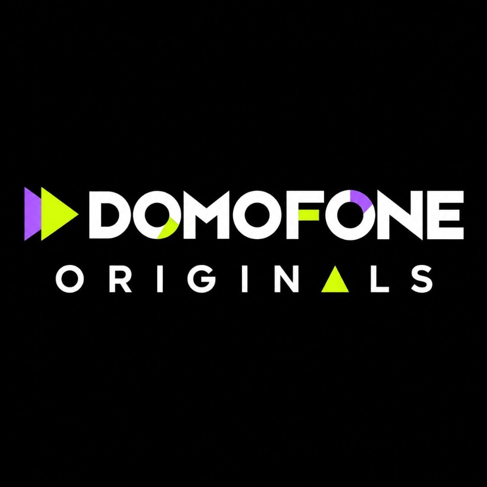
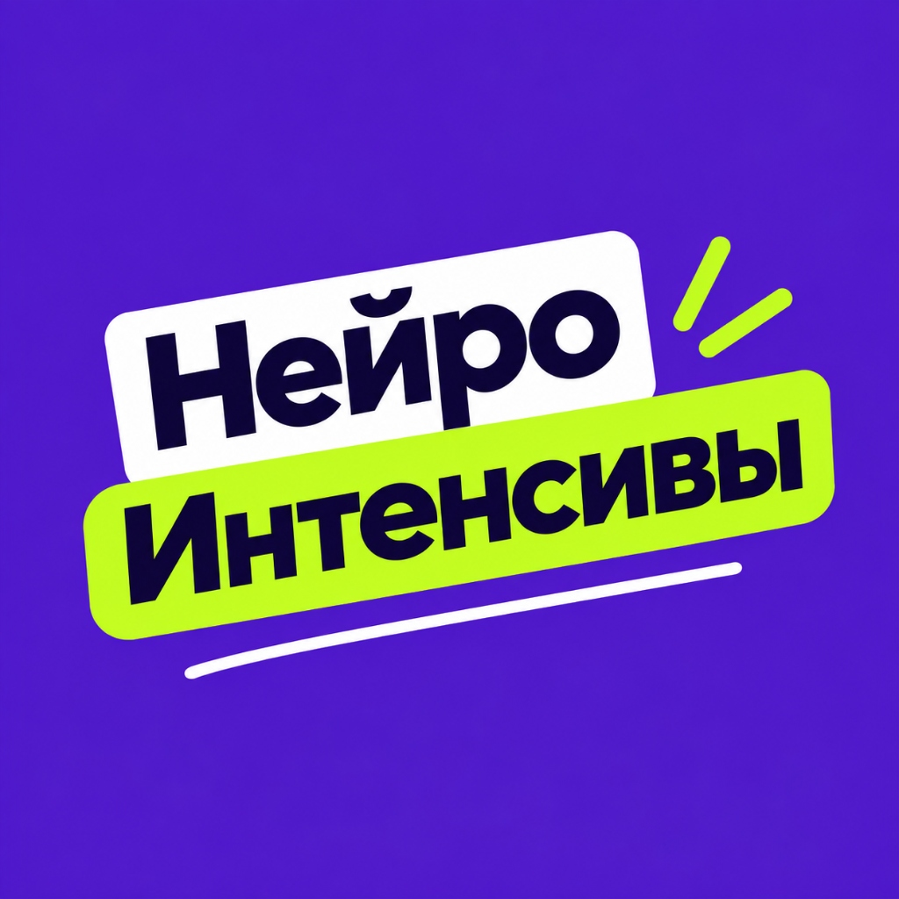
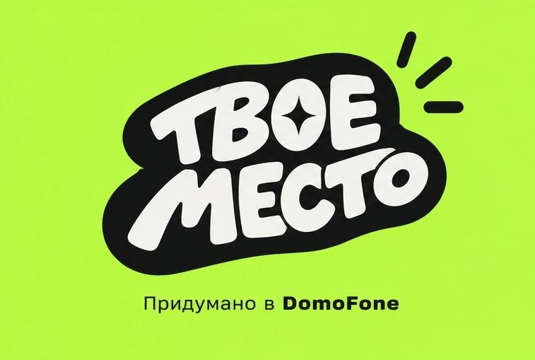
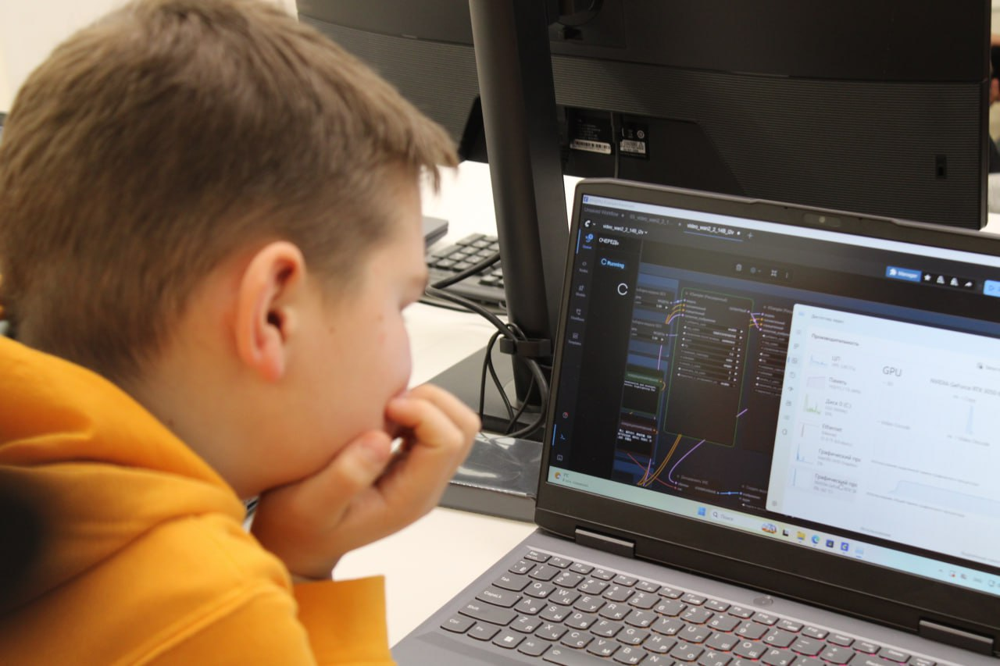
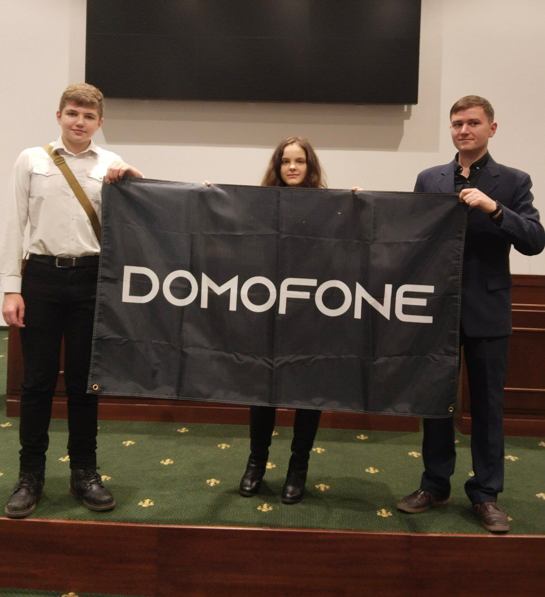
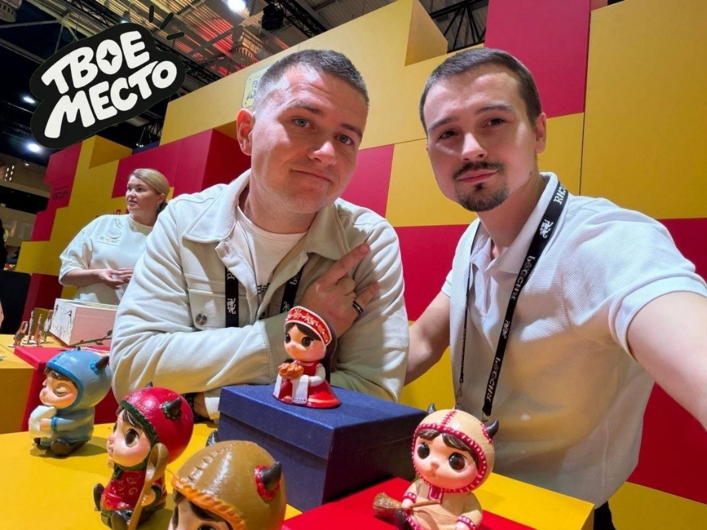
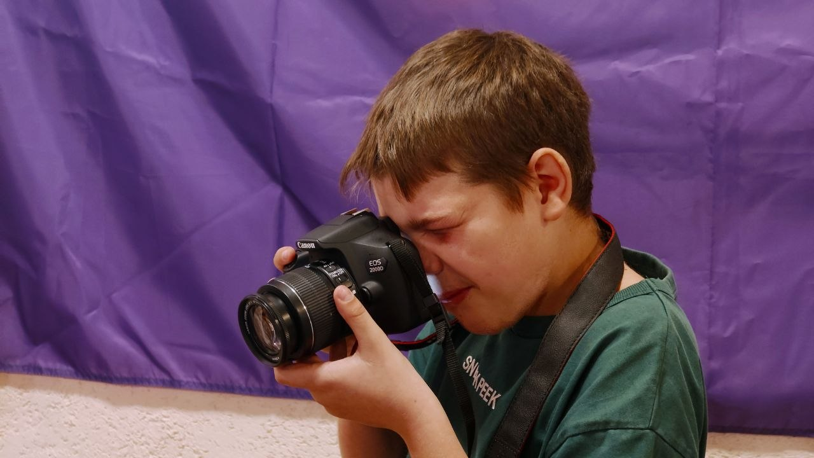
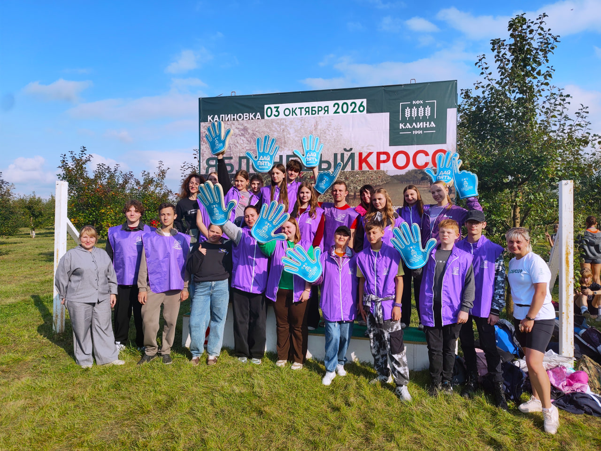
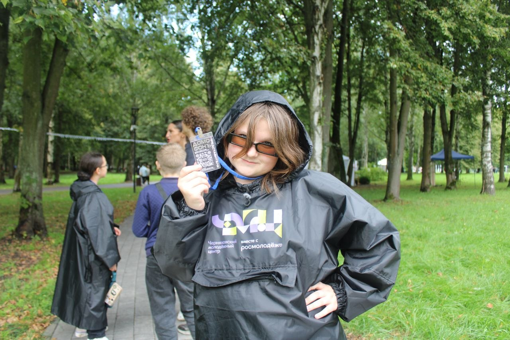

DomoFone — независимое творческое сообщество нового поколения. Мы объединяем авторов кино, исследователей генеративного AI и лидеров молодёжных инициатив для совместных проектов.

Машины считают. Алгоритмы оптимизируют. Но ЛЮДИ чувствуют, ошибаются и создают то, чего ещё не было.
Камера — это продолжение человеческого взгляда. Здесь мы пишем сценарии, находим актёров и локации, снимаем короткие метры, документальные проекты и подкасты. Мы не гонимся за форматом — мы рассказываем истории, в которых есть человек и искренность.


Нейросети не заменяют человека — они расширяют его возможности. Практические буткемпы по ComfyUI, Stable Diffusion и генеративному арту, где мы учим превращать абстрактные промпты в управляемый авторский стиль, анимацию и концепты.
Проект поддержки и развития молодёжных инициатив. Если у тебя есть замысел выставки, фестиваля, медиа или арт-инсталляции — сообщество становится твоей опорой. Мы помогаем с продюсированием, собираем команду и ведём проект до премьеры.

Заметка в телефоне, набросок сценария или желание создать что-то новое. Мы начинаем с того, что волнует именно тебя.
Режиссёр встречает оператора, сценарист находит композитора, а автор инициативы — продюсера. Команда складывается естественно.
Живые съёмки, сборка AI-нод, подготовка площадок и совместная работа над деталями проекта.
Показ на фестивале, релиз в сети, реализованная выставка и многое другое! Твой проект становится частью культурного пространства.
и много других инициатив для присоединения

ВОЗМОЖНОСТИ

СТРЕМЛЕНИЕ

ИНИЦИАТИВЫ

ИСКУССТВО

ВОЛОНТЁРСТВО

МЕДИА
Никакой бюрократии и скрытых условий. Честные ответы сообщества.
Участие абсолютно бесплатное. Мы не онлайн-школа и не берём взносов. Все проекты строятся на взаимной поддержке, совместном продакшне и энтузиазме авторов.
Да! Сообщество создано специально для молодёжи от 12 до 25 лет. Опыт не имеет значения: мы учим работе с камерой, звуком и нейросетями прямо на реальных задачах.
Напиши в наш Telegram-чат или приходи на открытый питчинг. Не нужно готовых презентаций — достаточно идеи или темы, которая по-настоящему тебя волнует.
Нет. Мы проводим очные спринты на площадках с оборудованными местами, а также учим использовать доступные облачные среды и бесплатные нодовые шаблоны.
Никаких приёмных комиссий и сложных отборов. Подключайся к нашим социальным каналам — смотри премьеры, следи за процессами и входи в комьюнити.